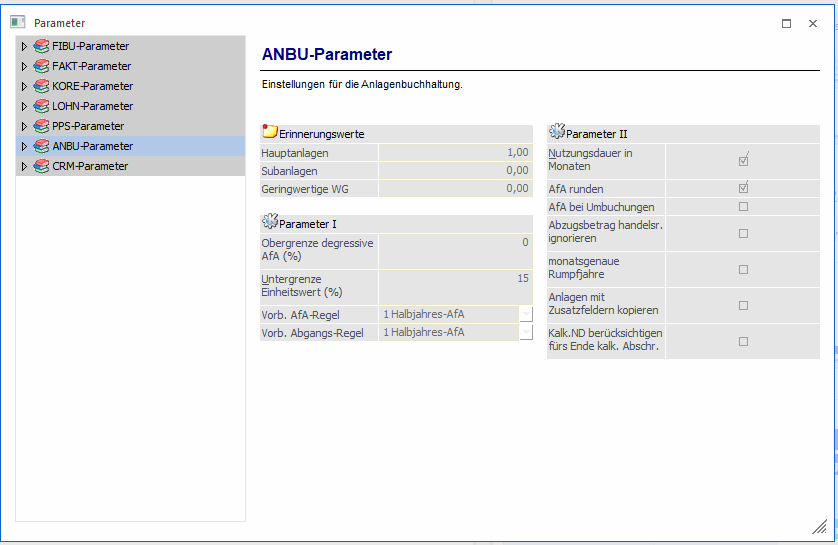

Darunter versteht man grundsätzlich Einstellungen die hier einmalig zu hinterlegen sind und als Vorbelegung für die gesamte Anlagenerfassung vorgeschlagen werden. Z.B. die Buchungskonten für Abschreibung, Obergrenze degressive AfA (gilt für Deutschland), Untergrenze des Einheitswertes.
Die Anlagenbuchhaltung ist unabhängig davon, welche Ländereinstellungen im Modul WinLine START in den FIBU-Parametern gewählt wurden, verwendbar. Es können die unterschiedlichsten Abschreibungsanforderungen einzelner Länder dargestellt werden. Dies wird durch die Vorbelegung eigener Abschreibungs- und Abgangsregeln in den Anlagenparametern ermöglicht.
Ausnahmen sind die folgenden Sonderabschreibungen, die nicht gemeinsam verwendet werden dürfen. Aufgrund einer Prüfung der Ländereinstellungen in den FIBU-Parametern des Moduls WinLine START wird die jeweils mögliche Art der Sonderabschreibung zur Verfügung gestellt.
ü Deutschland: Sonder-AfA
ü Österreich: Vorzeitige AfA, IFB
Achtung
Es können mehrere Wirtschaftsjahre parallel bearbeitet werden. Bei Mandanten mit abweichenden Wirtschaftsjahren dürfen aber maximal 4 Jahre parallel ohne Jahresabschreibung bearbeitet werden, da im Mandantenstamm Periodendefinitionen für maximal 4 Wirtschaftsjahre hinterlegt werden können.
Die Daten im ANBU-Parameter werden pro Wirtschaftsjahr gespeichert.
Gilt eine nachträgliche Änderung für mehrere Wirtschaftsjahre, muss die Änderung in jedem Wirtschaftsjahr durchgeführt werden.
